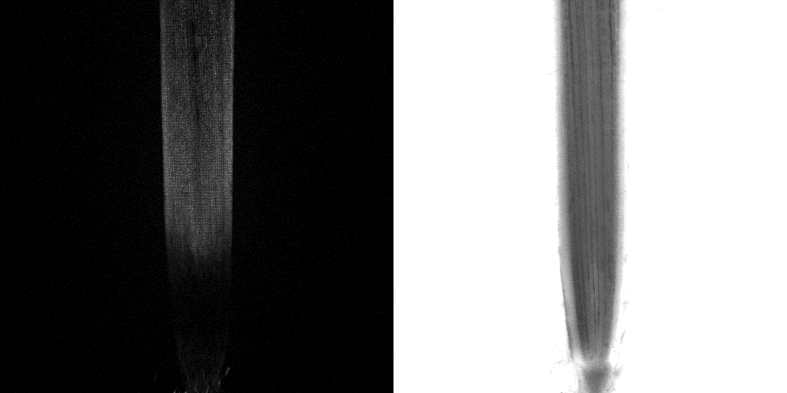
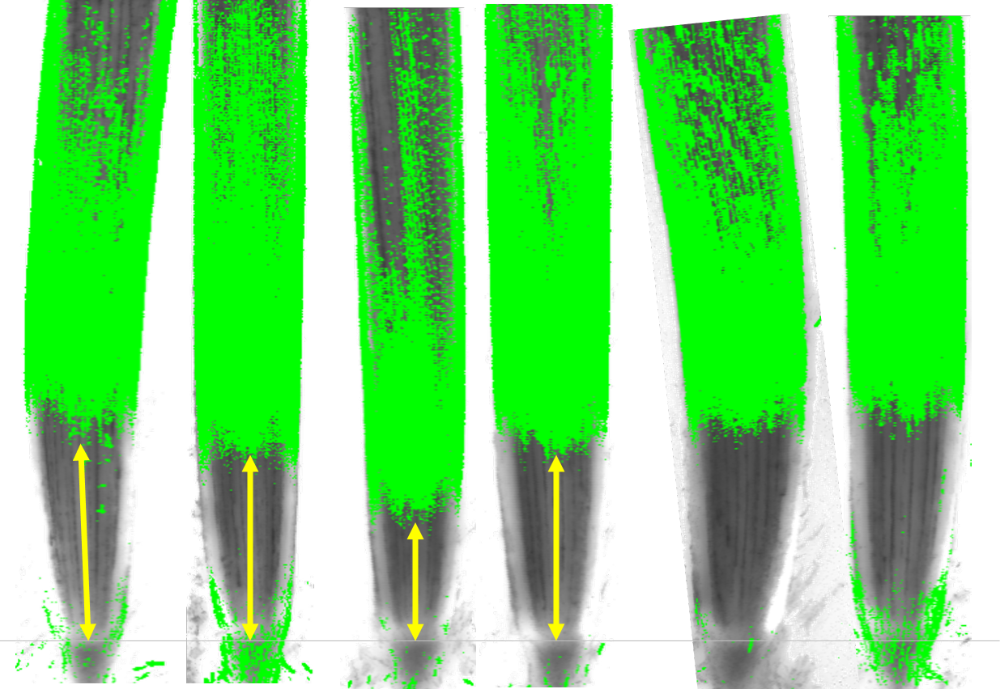

Manufacturer : Wako
Molecular Formula : C28H11F7O8S
M.W. = 640.44 g / mol
Procedure
Step 1: Prepare stock solution ( 10 mM )
Dissolve 1 mg of BES–H2O2–Ac powder in 156.2 μL DMSO to form a 10 mM stock solution. Store at room temperature, must be protected from light.
Step 2: Stain
Short time incubation
Dilute to 10 - 50 μM with growth medium. Incubate at room temperature for ≈ 20 mins, protected from light.
Long time incubation
Make medium contains 100 nM BES-H2O2-Ac.
Add 4 μL of 10 mM stock solution to 400 mL medium before the medium solidified ( ~ 50°C ), mix thoroughly, must be protected from light.
Grow the plant on this medium for ≈ 6 days, cut the root and observe using confocal microscope.
Before mounting the root onto the slide, gently remove the root cap by rubbing the root tip with tissue paper. This will make the quiescent center (QC) easier to identify.
Step 3: Confocal parameters
Parameters
Theoretical value
Our machine
Excitation peak
485 nm
488 nm
Emission peak
515 nm
505 ~ 541 nm
Magnification
5X
Laser intensity ( 488 nm )
20.0%
Master Gain ( 488 nm )
700 V
Master Gain ( T-PMT )
240 V
Digital Gain
1.0
Pinhole
≈ 35 μm
Z-stack interval
16 μm
Scan speed
6
Scan direction
⟷
Step 4: Image processing
Open the CZI file with ImageJ, view stack with Hyperstack.
Generate BES and T-PMT layers
Repeat this process twice to generate both the BES and T-PMT layers:
Image ⟶ Stacks ⟶ Z Project... ⟶ Projection type: Max intensity ⟶ File ⟶ Save As ⟶ Tiff...
Generate stacks
Load in the previously generated BES and T-PMT TIFF files.
Image ⟶ Stacks ⟶ Images to Stack
Measure distance
Measure the distance between root tip and the BES signal distal boundary. The root tip can be easily recognized in the T-PMT layer.
Done !!!
Example image

Figure 1. BES-H2O2-Ac emission signal (left) and T-PMT image (right). The H2O2 signal was detected near the proximal site of the root (above elongation zone). Sometimes, at the root distal site (meristematic zone), strong H2O2 signal could also be detected because of root cap residuals.

Figure 2. Stacked image of BES-H2O2-Ac and T-PMT image. The gray horizontal line represent the QC position of the root tip. The yellow vertical arrows represent the distance between the QC and the distal boundary of the BES signal. The BES signal had been binarized.